हाइब्रिड आर्किटेक्चर : दोनों दुनिया का सर्वश्रेष्ठ Supabase और Spring Boot के साथ
प्रकाशित: 14 January 2026
Supabase की सरलता और Spring Boot की शक्ति के बीच चयन करने के बजाय, क्यों नहीं दोनों को जोड़ा जाए? प्रत्येक तकनीक के सबसे श्रेष्ठ का लाभ उठाने वाली एक संकर वास्तुकला की खोज करें।
- आधुनिक वास्तुकला का झूठा द्वंद्व
- वास्तुशिल्प दृष्टि
- डिज़ाइन के सिद्धांत
- फ़्लो का ऑर्केस्ट्रेशन
- निर्णय मैट्रिक्स
- परियोजना के प्रकार के अनुसार आर्किटेक्चर के उदाहरण
- प्रगतिशील माइग्रेशन की रणनीति
- लागत एवं परिचालन संबंधी विचार
- निष्कर्ष : परिपूर्ण संतुलन
- अधिक आगे जाने के लिए
- विकास की संभावनाएँ
- वास्तुशिल्पी साक्ष्य
- संश्लेषण : एक आधुनिक वास्तुशास्त्रीय पैराडाइम
- अन्तिम निष्कर्ष
आधुनिक वास्तुकला का झूठा द्वंद्व
जब हम एक स्थिर फ्रंटएंड के साथ एक आधुनिक एप्लिकेशन बनाते हैं, तो हमें अक्सर द्विविध विकल्प का सामना करना पड़ता है:
-
Backend-as-a-Service समाधान पर पूरी तरह से दांव लगाएँ(Supabase, Firebase) - सरल लेकिन सीमित
-
एक पूर्ण बैकएंड बनाएँ(Spring Boot, Node.js) - शक्तिशाली लेकिन जटिल
यह विकल्प एक झूठा द्वंद्व है। हाइब्रिड आर्किटेक्चर तीसरे मार्ग की पेशकश करता है: प्रत्येक तकनीक को उसी स्थान पर उपयोग करें जहाँ वह श्रेष्ठ प्रदर्शन करती है।
वास्तुशिल्प दृष्टि
पारंपरिक वास्तुकला : एकात्मक
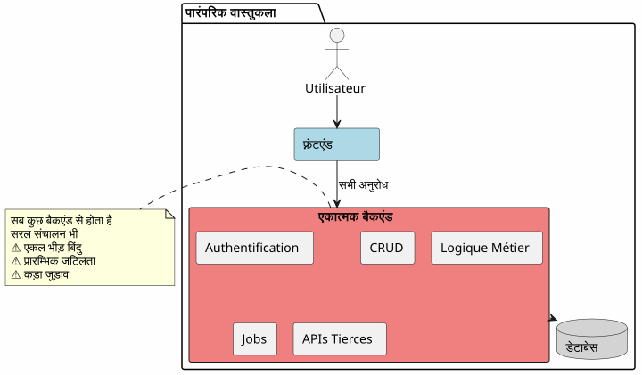
इस दृष्टिकोण में, भले ही सबसे सरल संचालन — एक लेख पढ़ना, एक टिप्पणी बनाना — आपके बैकएंड से होकर गुज़रने होंगे। आप पहले दिन से ही जटिलता की लागत का भुगतान करते हैं।
BaaS आर्किटेक्चर: सब कुछ प्रतिनिधि
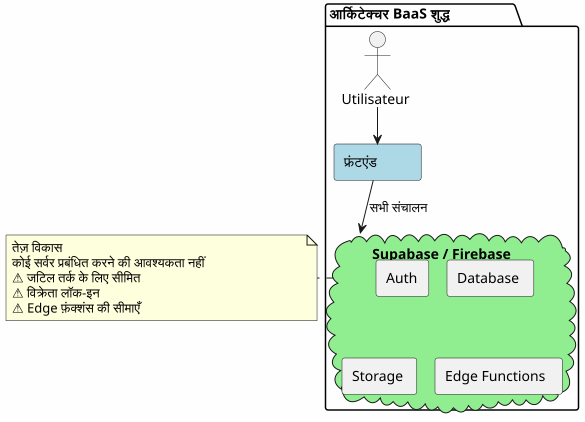
विपरीत रूप से, एक BaaS में सब कुछ आउटसोर्स करने की प्रारंभिक अवस्था आकर्षक लगती है, परन्तु जैसे ही व्यावसायिक तर्क जटिल होता है, यह जल्दी ही अपनी सीमा दिखाने लगता है।
हाइब्रिड आर्किटेक्चर: जिम्मेदारियों का पृथक्करण
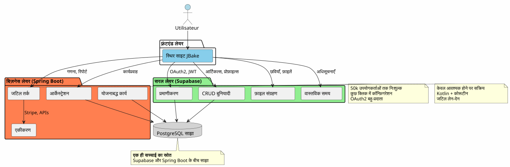
हाइब्रिड आर्किटेक्चर जटिलता और संचालन की प्रकृति के आधार पर स्पष्ट रूप से जिम्मेदारियों को अलग करता है।
डिज़ाइन के सिद्धांत
सिद्धांत 1: सरलता से शुरू करें, समझदारी से विकसित हों।
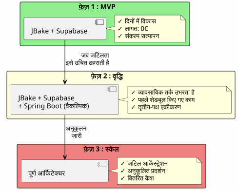
यदि आपको इसकी आवश्यकता नहीं है, तो Spring Boot का निर्माण न करें।Supabase के साथ शुरू करें, जब जटिलता इसे उचित ठहराती है तब Spring Boot जोड़ें।
सिद्धांत 2 : संचालन की प्रकृति के आधार पर पृथक्करण
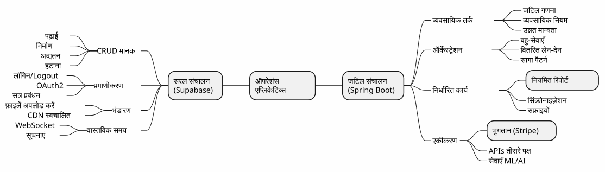
सिद्धांत 3: केवल एक सत्य का स्रोत
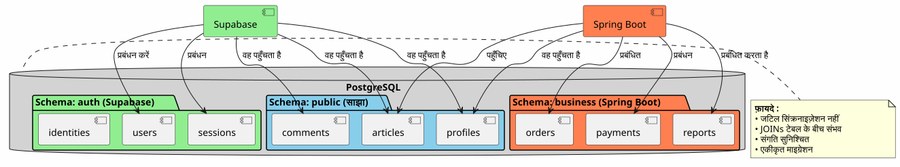
PostgreSQL की एक ही इंस्टेंस साझा करने से, Supabase और Spring Boot समान डेटा पर काम करते हैं, बिना किसी जटिल सिंक्रोनाइज़ेशन के।
फ़्लो का ऑर्केस्ट्रेशन
प्रवाह 1: केंद्रीकृत प्रमाणीकरण
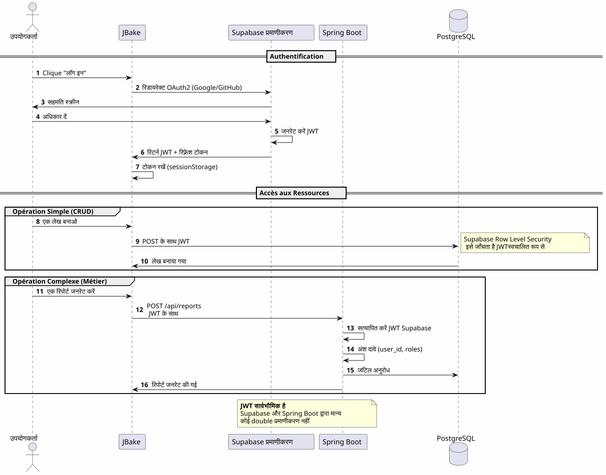
मुख्य बिंदु: एक ही प्रमाणन प्रक्रिया, एक ही JWT, हर जगह उपयोग करने योग्य।
फ़्लक्स 2 : जटिल व्यावसायिक प्रक्रिया का संचालन
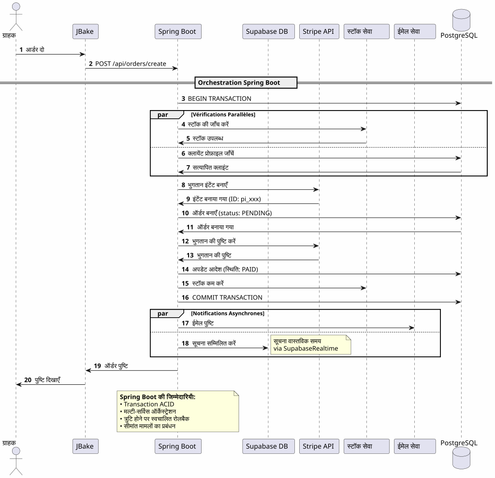
Spring Boot क्या लाता हैविश्वसनीय ऑर्केस्ट्रेशन जटिल प्रक्रियाओं की जिसमें कई सिस्टम शामिल होते हैं और ट्रांज़ैक्शन गारंटी होती है।
फ़्लक्स 3 : योजित कार्य और सिंक्रोनाइज़ेशन
Failed to generate image: PlantUML preprocessing failed: [From <input> (line 11) ] @startuml skinparam backgroundColor #FEFEFE participant "शेड्यूलर\n(Spring Boot)" as scheduler participant "रिपोर्ट सेवा" as report participant "PostgreSQL" as db participant "बाह्य API" as api participant "ईमेल सेवा" as email participant "Supabase भंडारण" as storage == Job Quotidien : 2h00 ^^^^^ Syntax Error? (Assumed diagram type: sequence) @startuml skinparam backgroundColor #FEFEFE participant "शेड्यूलर\n(Spring Boot)" as scheduler participant "रिपोर्ट सेवा" as report participant "PostgreSQL" as db participant "बाह्य API" as api participant "ईमेल सेवा" as email participant "Supabase भंडारण" as storage == Job Quotidien : 2h00 activate scheduler scheduler -> report : रिपोर्ट जनरेशन ट्रिगर करें activate report report -> db : प्राप्त करें डेटा\nपिछली 24 घंटे db -> report : डेटासेट report -> report : गणना & संकलन report -> report : पीढ़ी PDF report -> storage : अपलोड करें PDF storage -> report : URL publique report -> email : भेजें को एडमिन्स\nऔर लिंक PDF deactivate report == Job Hebdomadaire : रविवार 3:00 scheduler -> report : बाह्य सिंक्रोनाइज़ेशन activate report report -> api : बाहरी डेटा लाओ api -> report : नया डेटा report -> db : तालिकाओं का अद्यायन report -> db : ओब्सोलेट डेटा की सफाई deactivate report == Job Mensuel : महीने की पहली तारीख == scheduler -> report : बिलिंग activate report report -> db : सक्रिय क्लाइंटों की सूची report -> report : गणना राशि report -> api : इनवॉयस जनरेशन (Stripe) report -> email : बिल भेजना deactivate report deactivate scheduler note right of scheduler Supabase के साथ अकेला असंभव Edge Functions अनुकूलित नहीं लंबे और पुनरावृत्त कार्यों के लिए end note @enduml
Spring Boot क्या लाता है: विश्वसनीय शेड्यूल किए गए कामों के साथ राज्य प्रबंधन, स्वचालित पुनः प्रयास और गारंटीकृत निष्पादन।
निर्णय मैट्रिक्स
सुपाबेस का उपयोग कब करें?
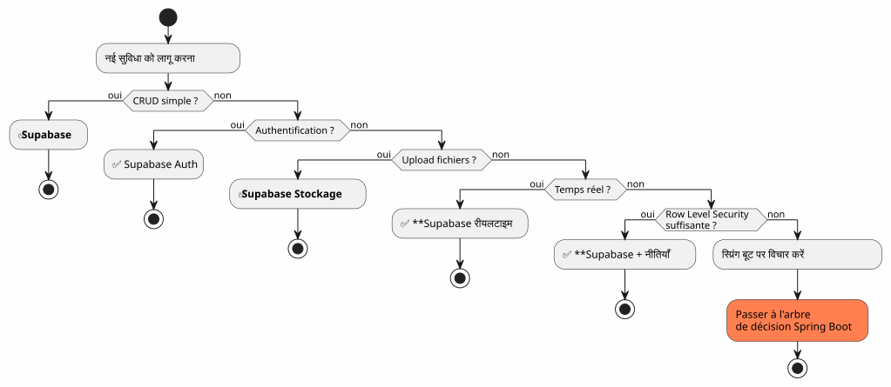
स्प्रिंग बूट कब उपयोग करें?
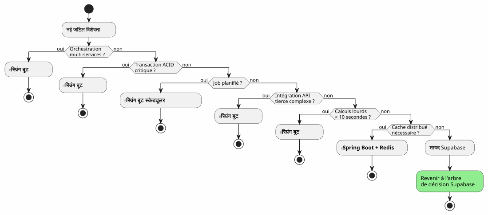
परियोजना के प्रकार के अनुसार आर्किटेक्चर के उदाहरण
ब्लॉग / पोर्टफ़ोलियो
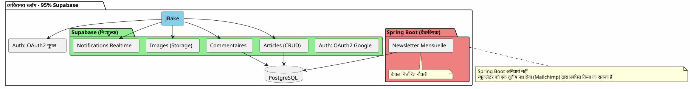
निर्णयसुपरबेस का 100% ही पर्याप्त है।
SaaS एप्लिकेशन
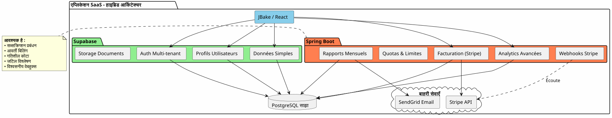
निर्णयहाइब्रिड आर्किटेक्चर आवश्यक है। सुपरबेस मुख्य कार्यों के लिए, स्प्रिंग बूट क्रिटिकल भाग (भुगतान, बिलिंग) के लिए।
ई-कॉमर्स
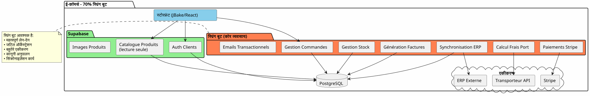
निर्णयSpring Boot आवश्यक है। Supabase केवल auth और catalog के लिए।
प्रगतिशील माइग्रेशन की रणनीति
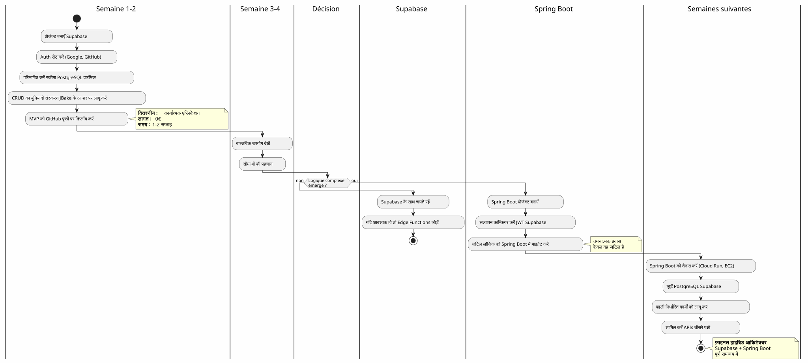
लागत एवं परिचालन संबंधी विचार
लागत संरचना
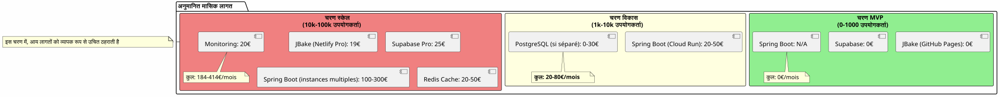
संचालनात्मक जिम्मेदारियाँ
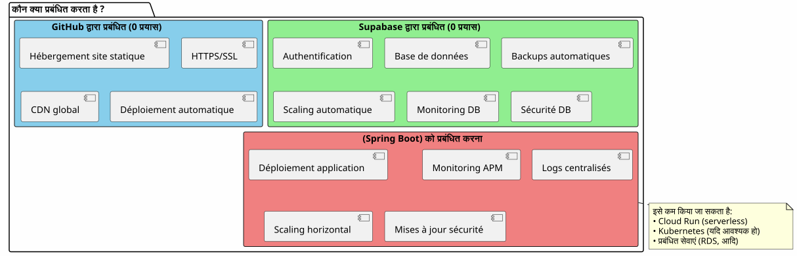
निष्कर्ष : परिपूर्ण संतुलन
Supabase + Spring Boot का हाइब्रिड आर्किटेक्चर कोई समझौता नहीं है, यह एकसिनर्ज़ी.
याद रखने वाले सिद्धांत
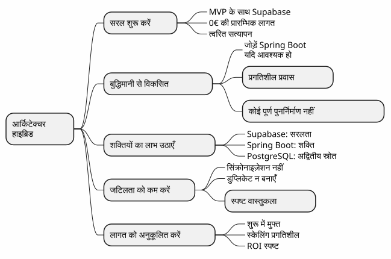
इस आर्किटेक्चर को कब चुनना चाहिए ?
यह आर्किटेक्चर आदर्श है यदि :
-
आप जल्दी शुरू करना चाहते हैं (MVP दिनों में, महीनों में नहीं)
-
आप व्यावसायिक जटिलता में वृद्धि की अपेक्षा करते हैं।
-
आप प्रारम्भिक लागत को कम करना चाहते हैं।
-
आप PostgreSQL को पसंद करते हैं और एक अद्वितीय सत्य के स्रोत की इच्छा रखते हैं।
-
आपको कोटलिन और कोरूटिनें व्यापारिक कोड के लिए पसंद हैं
-
आप पूर्ण रूप से विक्रेता बंधन से बचना चाहते हैं
यह आर्किटेक्चर अनुकूल नहीं है यदि :
-
आपका प्रोजेक्ट सरल है और ऐसा ही रहेगा (व्यक्तिगत ब्लॉग → केवल 100% Supabase पर्याप्त)
-
आपके पास पहले से ही एक स्थापित बैकएंड स्टैक है जिसे आप समझते हैं
-
आपको एक पारंपरिक मोनोलिथ पसंद है
-
आपको .NET, Python या किसी भी अन्य बैकएंड भाषा की आवश्यकता है।
अंतिम समग्र दृष्टि
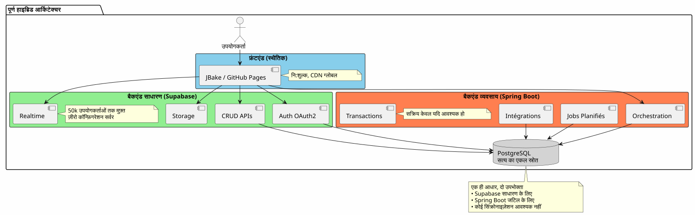
दो दुनिया का सर्वश्रेष्ठ
यह आर्किटेक्चर आपको देता है :
Supabase की गति
-
घंटों में प्रारम्भ, सप्ताह नहीं
-
OAuth2 प्रमाणीकरण कुछ क्लिक में
-
स्वचालित रूप से तैयार की गई REST API
-
ज़ीरो सर्वर कॉन्फ़िग्रेशन
Spring Boot की शक्ति
-
Kotlin और कोरूटिन्स सुंदर एसिंक्रोनस कोड के लिए
-
जटिल व्यावसायिक प्रक्रियाओं का ऑर्केस्ट्रेशन
-
विश्वसनीय अनुसूचित जॉब्स
-
ACID लेन‑देन की गारंटी
-
इकोसिस्टम Spring पूर्ण
प्रगतिशील अर्थव्यवस्था
-
शुरू करने और मान्य करने के लिए 0€
-
वृद्धि के अनुसार लागतें
-
अकाल अतिरिक्त इंजीनियरिंग नहीं
🎯 आर्किटेक्चरल लचीलापन
-
प्रगतिशील प्रवासन बिना पुनःनिर्माण के
-
ज़रूरत पड़ने पर ही Spring Boot जोड़ें
-
को पूर्ण वेंडर लॉक-इन नहीं
-
विकासशील वास्तुकला
अधिक आगे जाने के लिए
तकनीकी संसाधन
सुपाबेस दस्तावेज़ :
स्प्रिंग बूट दस्तावेज़:
अतिरिक्त अनुच्छेद :
-
JWT के साथ APIs की सुरक्षा
-
PostgreSQL प्रदर्शन अनुकूलन
-
प्रगतिशील प्रवास पैटर्न
-
वितरित वास्तुकला में त्रुटियों का प्रबंधन
वास्तविक उपयोग के मामले
यह हाइब्रिड आर्किटेक्चर सफलतापूर्वक उपयोग किया जाता है :
-
SaaS B2B: प्रमाणीकरण Supabase, बिलिंग Spring Boot
-
मार्केटप्लेसकैटलॉग Supabase, लेन-देन Spring Boot
-
सामग्री प्लेटफ़ॉर्मSupabase के लेख, Spring Boot एनालिटिक्स
-
आंतरिक उपकरण: CRUD Supabase, कार्यप्रवाह Spring Boot
स्टार्टअप चेकलिस्ट
फ़ेज़ 1 - बुनियादें (सप्ताह 1)
-
सुपरबेस खाता बनाएँ - [ ] पोस्टग्रे SQL प्रोजेक्ट को कॉन्फ़िगर करें - [ ] प्रमाणीकरण सक्रिय करें (Google, GitHub) - [ ] प्रारंभिक स्कीमा निर्धारित करें - [ ] Row Level Security सेट करें - [ ] JBake से APIs का परीक्षण करें
चरण 2 - एमवीपी (सप्ताह 2-3)
-
मुख्य पेज़ लागू करें - [ ] OAuth2 प्रमाणीकरण को एकीकृत करें - [ ] CRUD फ़ॉर्म बनाएँ - [ ] फ़ाइलों के लिए Storage कॉन्फ़िगर करें - [ ] GitHub Pages पर तैनात करें - [ ] वास्तविक परिस्थितियों में परीक्षण करें
फ़ेज़ 3 - विकास (ज़रूरत के अनुसार)
-
जटिल तर्क की आवश्यकताओं को पहचानें - [ ] यदि आवश्यक हो तो Spring Boot प्रोजेक्ट बनाएं - [ ] Supabase JWT मान्यता कॉन्फ़िगर करें - [ ] PostgreSQL Supabase से कनेक्ट करें जटिल फ़ीचर्स को माइग्रेट करें - [ ] निर्धारित जॉब्स लागू करें - [ ] स्प्रिंग बूट को तैनात करें (Cloud Run, आदि)
Anti-Patterns से बचें
न करें :
-
Supabase और Spring Boot के बीच डेटा डुप्लिकेट करें
-
दो अलग‑अलग PostgreSQL डेटाबेस बनाएँ
-
खुद प्रमाणीकरण कोड लिखें
-
साधारण CRUD के लिए Spring Boot का उपयोग करें
-
शुरू से ही अत्यधिक आर्किटेक्टिंग करना
-
सुपाबेस की पंक्ति-स्तर सुरक्षा को अनदेखा करें
इसके बजाय :
-
एक ही PostgreSQL डेटाबेस साझा करें
-
Supabase को प्रमाणीकरण संभालने दें
-
केवल जटिलता के लिए Spring Boot का उपयोग करें।
-
सरलता से शुरू करें, धीरे-धीरे विकसित हों
-
प्रत्येक तकनीक की ताकतों का उपयोग करें
-
datastructured: RLs का उपयोग करके डेटाबेस स्तर पर सुरक्षित करें
विकास की संभावनाएँ
नई क्षमताओं का जोड़
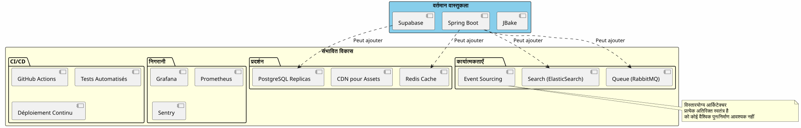
हॉरिज़ॉन्टल स्कैलिंग
जब आपका एप्लिकेशन बढ़ता है, तो हाइब्रिड आर्किटेक्चर स्वाभाविक रूप से स्केल होता है :
Supabase :
-
स्वचालित रूप से लाखों ऑपरेशन तक स्केल हो जाता है
-
पढ़ने के प्रदर्शन के लिए रीड रिप्लिकाएँ
-
सुरक्षा के लिए पॉइंट-इन-टाइम रिकवरी
स्प्रिंग बूट :
-
लोड बैलेंसर के पीछे कई इंस्टेंसेस
-
स्टेटलेस डिज़ाइन क्षैतिज स्केलिंग को सुविधाजनक बनाता है
-
ओर्केस्ट्रेशन के लिए आवश्यक होने पर कुबरनेट्स
पोस्टग्रेसक्यूएल :
-
बड़े टेबल के लिए पार्टीशनिंग
-
कनेक्शन पूलिंग (PgBouncer)
-
शार्डिंग केवल यदि वास्तव में आवश्यक हो (दुर्लभ)
वास्तुशिल्पी साक्ष्य
स्टार्टअप SaaS (50k उपयोगकर्ता)
(No content) हमने 100% Supabase से शुरुआत की। 5k उपयोगकर्ताओं पर, हमने केवल Stripe बिलिंग और मासिक रिपोर्ट के लिए Spring Boot जोड़ा। एक वर्ष बाद, हमारे 80% संचालन अभी भी Supabase के माध्यम से चल रहे हैं। Spring Boot केवल महत्वपूर्ण भाग को प्रबंधित करता है। इस अलगाव ने हमें बिना फिर से डिज़ाइन किए स्केल करने की अनुमति दी। (No output – the prompt contains no translatable French text.)
इ-लर्निंग प्लेटफ़ॉर्म (10k उपयोगकर्ता)
(No output - empty string) Supabase का OAuth2 प्रमाणन ने हमें विकास में तीन सप्ताह की बचत कराई। स्वचालित रूप से उत्पन्न API हमारे पूरे पाठ्यक्रम कैटलॉग को प्रबंधित करते हैं। Spring Boot केवल PDF प्रमाणपत्र और प्रगति ईमेल के लिए प्रयोग किया जाता है। सरल, रखरखाव योग्य, विस्तारित करने योग्य आर्किटेक्चर। __
Marketplace B2B (3k उपयोगकर्ता)
(empty response) Spring Boot खरीदारों और विक्रेताओं के बीच लेनदेन (गंभीर)। Supabase शेष सब कुछ प्रबंधित करता है: प्रोफ़ाइल, वास्तविक‑समय संदेश, दस्तावेज़। तथ्य यह कि वे एक ही पोस्टग्रेस डेटाबेस साझा करते हैं हमें जटिल समन्वय से बचाता है। हमारा अब तक का सबसे अच्छा वास्तुशिल्प विकल्प। __
संश्लेषण : एक आधुनिक वास्तुशास्त्रीय पैराडाइम
Supabase + Spring Boot का हाइब्रिड आर्किटेक्चर एक नया पैराडाइम दर्शाता है:आर्किटेक्टिकल विशेषज्ञता.
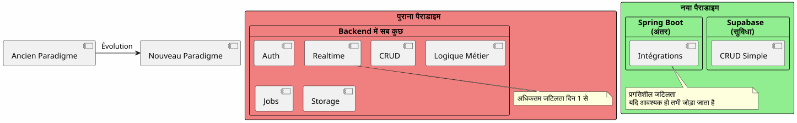
मूलभूत सिद्धांत:इसे सेवा के रूप में पहले से ही जो कुछ भी है, उसका निर्माण न करें। उस पर ध्यान केंद्रित करें जो आपके अनुप्रयोग को अलग करता है।
80/20 का नियम
अधिकांश अनुप्रयोगों में :
-
प्रचालनों के 80%वे मानक CRUD हैं → Supabase
-
कार्यवाहियों का 20%nécessitent व्यापारिक तर्क की आवश्यकता होती है → Spring Boot
यह प्राकृतिक नियम हाइब्रिड आर्किटेक्चर को सही ठहराता है।
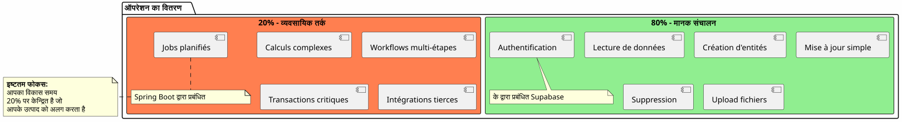
अन्तिम निष्कर्ष
हाइब्रिड आर्किटेक्चर एक तकनीकी समझौता नहीं है, यह एकरणनीतिक निर्णय.
यह आपको करने देता है :
-
✅ एक कार्यशील एमवीपी के साथ जल्दी से शुरू करें
-
✅ भारी निवेश के बिना अपना बाज़ार सत्यापित करें
-
जटिलता की आवश्यकता होने पर धीरे-धीरे विकसित होते रहें
-
हर चरण में अपनी लागत को नियंत्रित रखें
-
हर तकनीक का सर्वोत्तम उपयोग करें
-
समय से पहले अतिअभियांत्रिकी से बचें
-
भविष्य के लिए लचीलापन बनाए रखें
वह प्रतिनिधित्व करती है :
-
🎯 प्रायोगिकताहर तकनीक जिसमें वह उत्कृष्ट है
-
🚀वेगबाजार में प्रवेश करने का समय न्यूनतम
-
💰अर्थशास्त्रमूल्य के अनुसार लागतें
-
🔮स्केलेबिलिटीआपके साथ बढ़ती वास्तुकला
-
🛡️सुदृढ़ता: सिद्ध और विश्वसनीय सेवाएँ
आपका अगला कदम
यदि आपको यह वास्तुकला पसंद आए, तो यहाँ से शुरू करें:
-
Supabase खाता बनाएँ(मुफ्त)
-
अपने न्यूनतम डेटा स्कीमा को परिभाषित करें
-
OAuth2 प्रमाणीकरण सेट करें
-
अपनी पहली JBake पेज बनाएँ जो API का उपयोग करता है
-
GitHub Pages पर तैनात करें
आपके पास एक कार्यात्मक एमवीपी होगाकुछ दिन.
Spring Boot आपकी आवश्यकता होने पर स्वाभाविक रूप से आ जाएगा। पहले नहीं।
हाइब्रिड आर्किटेक्चर वह कला है जिसमें केवल आवश्यकता अनुसार सही समय पर सही चीज़ बनाई जाती है।
अच्छा विकास ! 🚀
यदि आप सोचते हैं कि यह लेख अन्य डेवलपर्स को सही आर्किटेक्चरल विकल्प बनाने में मदद कर सकता है, तो इसे साझा करें।